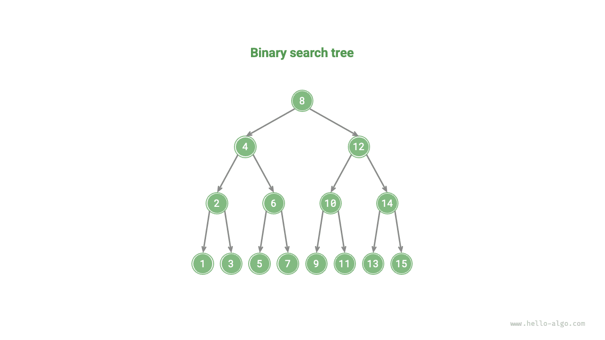
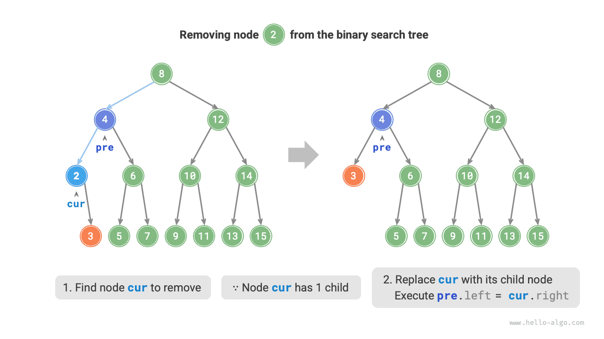
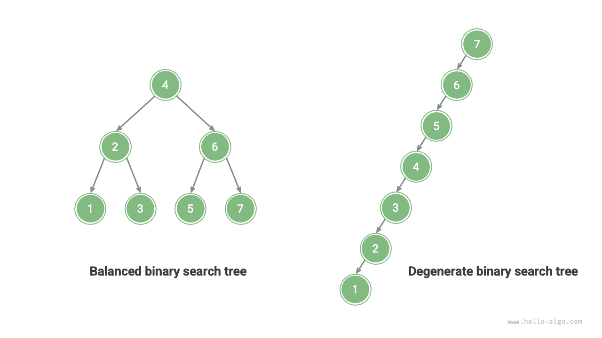

الأشجار
شجرة البحث الثنائية
كما يوضح الشكل أدناه، تستوفي شجرة البحث الثنائية الشروط التالية.
- بالنسبة إلى العقدة الجذرية، تكون قيمة جميع العقد في الشجرة الفرعية اليسرى $<$ قيمة العقدة الجذرية $<$ قيمة جميع العقد في الشجرة الفرعية اليمنى.
- الشجرتان الفرعيتان اليسرى واليمنى لأي عقدة هما أيضاً شجرتا بحث ثنائيتان، أي أنهما تستوفيان الشرط
1.أيضاً.

العمليات على شجرة البحث الثنائية
نغلّف شجرة البحث الثنائية في صنف BinarySearchTree ونعلن متغيراً عضواً root يشير إلى العقدة الجذرية للشجرة.
البحث عن عقدة
بمعطى قيمة عقدة مستهدفة num، يمكننا البحث وفق خصائص شجرة البحث الثنائية. وكما يوضح الشكل أدناه، نعلن عقدة cur ونبدأ من العقدة الجذرية لشجرة البحث الثنائية root، ونكرّر مقارنة cur.val بـnum.
- إذا كان
cur.val < num، فالعقدة المستهدفة في الشجرة الفرعية اليمنى لـcur، فننفّذcur = cur.right. - إذا كان
cur.val > num، فالعقدة المستهدفة في الشجرة الفرعية اليسرى لـcur، فننفّذcur = cur.left. - إذا كان
cur.val = num، فقد وُجدت العقدة المستهدفة، فنخرج من الحلقة ونعيد العقدة.
تتبع عملية البحث في شجرة البحث الثنائية المبدأ نفسه الذي يتبعه البحث الثنائي: كل جولة تستبعد نصف الحالات المتبقية. وعدد تكرارات الحلقة لا يزيد على ارتفاع الشجرة. وعندما تكون الشجرة متوازنة، يستغرق البحث زمن $O(\log n)$. وشيفرة المثال كما يلي:
Go
/* ابحث عن عقدة */
func (bst *binarySearchTree) search(num int) *TreeNode {
node := bst.root
// البحث بحلقة، واخرج بعد تجاوز عقدة ورقة
for node != nil {
if node.Val.(int) < num {
// العقدة المستهدفة في الشجرة الفرعية اليمنى لـcur
node = node.Right
} else if node.Val.(int) > num {
// العقدة المستهدفة في الشجرة الفرعية اليسرى لـcur
node = node.Left
} else {
// وُجدت العقدة المستهدفة، اخرج من الحلقة
break
}
}
// أعد العقدة المستهدفة
return node
}
إدراج عقدة
بمعطى عنصر num مطلوب إدراجه، ومن أجل الحفاظ على خاصية شجرة البحث الثنائية «الشجرة الفرعية اليسرى < العقدة الجذرية < الشجرة الفرعية اليمنى»، تكون عملية الإدراج كما يوضح الشكل أدناه.
- إيجاد موضع الإدراج: على غرار عملية البحث، ابدأ من العقدة الجذرية وابحث بحلقة نزولاً وفق علاقة الحجم بين قيمة العقدة الحالية و
num، حتى تتجاوز عقدة ورقة (يصل الاجتياز إلىNone) ثم اخرج من الحلقة. - أدرج العقدة عند ذلك الموضع: أنشئ عقدة لـ
numوضعها عند موضعNone.

وفي تنفيذ الشيفرة، لاحظ النقطتين التاليتين:
- لا تسمح أشجار البحث الثنائية بعقد مكررة؛ وإلا لما عادت الشجرة تستوفي تعريفها. لذلك، إذا كانت العقدة المطلوب إدراجها موجودة بالفعل في الشجرة، يُتخطى الإدراج وتعود الدالة مباشرة.
- لتنفيذ إدراج العقدة، يلزمنا استخدام العقدة
preلحفظ العقدة من الجولة السابقة. وبهذه الطريقة، عندما نصل في الاجتياز إلىNone، يمكننا الحصول على عقدتها الأب، وبذلك نكمل عملية إدراج العقدة.
Go
/* أدرج عقدة */
func (bst *binarySearchTree) insert(num int) {
cur := bst.root
// إذا كانت الشجرة فارغة، هيّئ العقدة الجذرية
if cur == nil {
bst.root = NewTreeNode(num)
return
}
// موضع العقدة السابقة للعقدة المطلوب إدراجها
var pre *TreeNode = nil
// البحث بحلقة، واخرج بعد تجاوز عقدة ورقة
for cur != nil {
if cur.Val == num {
return
}
pre = cur
if cur.Val.(int) < num {
cur = cur.Right
} else {
cur = cur.Left
}
}
// أدرج العقدة
node := NewTreeNode(num)
if pre.Val.(int) < num {
pre.Right = node
} else {
pre.Left = node
}
}
وعلى غرار البحث عن عقدة، يستغرق إدراج عقدة زمن $O(\log n)$.
حذف عقدة
أولاً، اعثر على العقدة المستهدفة في شجرة البحث الثنائية ثم احذفها. وعلى غرار إدراج العقدة، يلزمنا ضمان بقاء خاصية شجرة البحث الثنائية «الشجرة الفرعية اليسرى $<$ العقدة الجذرية $<$ الشجرة الفرعية اليمنى» بعد اكتمال عملية الحذف. لذلك، وبحسب عدد العقد الابنة التي تمتلكها العقدة المستهدفة، ننظر في ثلاث حالات: الدرجة $0$، والدرجة $1$، والدرجة $2$، وننفّذ عملية الحذف المقابلة.
وكما يوضح الشكل أدناه، عندما تكون درجة العقدة المطلوب حذفها $0$، فهذا يعني أنها عقدة ورقة ويمكن حذفها مباشرة.

وكما يوضح الشكل أدناه، عندما تكون درجة العقدة المطلوب حذفها $1$، يكفي استبدال العقدة المطلوب حذفها بعقدتها الابنة.

وعندما تكون درجة العقدة المطلوب حذفها $2$، لا يمكن حذفها مباشرة؛ بل يلزمنا استخدام عقدة لاستبدالها. وللحفاظ على خاصية شجرة البحث الثنائية «الشجرة الفرعية اليسرى $<$ العقدة الجذرية $<$ الشجرة الفرعية اليمنى»، يمكن أن تكون هذه العقدة إما أصغر عقدة في الشجرة الفرعية اليمنى وإما أكبر عقدة في الشجرة الفرعية اليسرى.
وبافتراض أننا نختار أصغر عقدة في الشجرة الفرعية اليمنى، أي خَلَفها في الاجتياز الوسطي، تكون عملية الحذف كما يوضح الشكل أدناه.
- اعثر على العقدة التالية للعقدة المطلوب حذفها في «متتالية الاجتياز الوسطي»، وارمز إليها بـ
tmp. - استبدل قيمة العقدة المطلوب حذفها بقيمة
tmp، واحذف العقدةtmpتعاودياً في الشجرة.
وتستغرق عملية حذف العقدة أيضاً زمن $O(\log n)$، حيث يتطلب العثور على العقدة المطلوب حذفها زمن $O(\log n)$، ويتطلب الحصول على عقدة الخَلَف في الاجتياز الوسطي زمن $O(\log n)$. وشيفرة المثال كما يلي:
Go
/* احذف عقدة */
func (bst *binarySearchTree) remove(num int) {
cur := bst.root
// إذا كانت الشجرة فارغة، عُد مباشرة
if cur == nil {
return
}
// موضع العقدة السابقة للعقدة المطلوب حذفها
var pre *TreeNode = nil
// البحث بحلقة، واخرج بعد تجاوز عقدة ورقة
for cur != nil {
if cur.Val == num {
break
}
pre = cur
if cur.Val.(int) < num {
// العقدة المطلوب حذفها في الشجرة الفرعية اليمنى
cur = cur.Right
} else {
// العقدة المطلوب حذفها في الشجرة الفرعية اليسرى
cur = cur.Left
}
}
// إذا لم توجد عقدة للحذف، عُد مباشرة
if cur == nil {
return
}
// عدد العقد الابنة 0 أو 1
if cur.Left == nil || cur.Right == nil {
var child *TreeNode = nil
// احصل على العقدة الابنة للعقدة المطلوب حذفها
if cur.Left != nil {
child = cur.Left
} else {
child = cur.Right
}
// احذف العقدة cur
if cur != bst.root {
if pre.Left == cur {
pre.Left = child
} else {
pre.Right = child
}
} else {
// إذا كانت العقدة المحذوفة هي العقدة الجذرية، أعد إسناد العقدة الجذرية
bst.root = child
}
// عدد العقد الابنة 2
} else {
// احصل على العقدة التالية للعقدة cur المطلوب حذفها في الاجتياز الوسطي
tmp := cur.Right
for tmp.Left != nil {
tmp = tmp.Left
}
// احذف العقدة tmp تعاودياً
bst.remove(tmp.Val.(int))
// استبدل cur بـtmp
cur.Val = tmp.Val
}
}
الاجتياز الوسطي مرتّب
كما يوضح الشكل أدناه، يتبع الاجتياز الوسطي للشجرة الثنائية ترتيب الاجتياز «يسار $\rightarrow$ جذر $\rightarrow$ يمين»، بينما تستوفي شجرة البحث الثنائية علاقة الحجم «العقدة الابنة اليسرى $<$ العقدة الجذرية $<$ العقدة الابنة اليمنى».
وهذا يعني أنه عند إجراء اجتياز وسطي في شجرة بحث ثنائية، تُجتاز العقدة الأصغر التالية دائماً أولاً، لنحصل من ذلك على خاصية مهمة: متتالية الاجتياز الوسطي لشجرة البحث الثنائية تصاعدية.
وباستخدام خاصية أن الاجتياز الوسطي تصاعدي، يمكننا الحصول على بيانات مرتبة في شجرة بحث ثنائية في زمن $O(n)$ فقط، دون الحاجة إلى عمليات ترتيب إضافية، وهو أمر عالي الكفاءة.

كفاءة أشجار البحث الثنائية
بمعطى مجموعة بيانات، ننظر في استخدام مصفوفة أو شجرة بحث ثنائية لتخزينها. وبمراقبة الجدول أدناه، فإن جميع العمليات في شجرة البحث الثنائية ذات تعقيد زمني لوغاريتمي، مما يوفر أداءً مستقراً وفعّالاً. ولا تكون المصفوفات أكثر كفاءة من أشجار البحث الثنائية إلا في السيناريوهات التي تكثر فيها الإضافة وتقلّ فيها عمليات البحث والحذف.
جدول
| المصفوفة غير المرتبة | شجرة البحث الثنائية | |
|---|---|---|
| البحث عن عنصر | $O(n)$ | $O(\log n)$ |
| إدراج عنصر | $O(1)$ | $O(\log n)$ |
| حذف عنصر | $O(n)$ | $O(\log n)$ |
في الحالة المثالية، تكون شجرة البحث الثنائية متوازنة، لذا يمكن العثور على أي عقدة خلال $O(\log n)$ من تكرارات الحلقة.
غير أننا إذا أدرجنا العقد وحذفناها باستمرار في شجرة بحث ثنائية، فقد تتدهور إلى قائمة مترابطة كما يوضح الشكل أدناه، حيث يتدهور التعقيد الزمني لمختلف العمليات أيضاً إلى $O(n)$.

التطبيقات الشائعة لأشجار البحث الثنائية
- تُستخدم كفهارس متعددة المستويات في الأنظمة لتنفيذ عمليات بحث وإدراج وحذف فعّالة.
- تعمل كبنية بيانات أساسية لبعض خوارزميات البحث.
- تُستخدم لتخزين تدفقات البيانات للحفاظ على حالتها المرتّبة.